Phase 1 Cache Report
caption JSONL, cleaned JSONL, sparse text embedding cache, dense aligned text embedding cache, and sample 1fps frames in one view
Overview
| split | raw caption rows | clean rows | sparse npz | dense npz | avg sparse len | avg dense len | image root |
|---|---|---|---|---|---|---|---|
| test | 13193 | 13193 | 2367 | 2367 | 6.45 | 60.41 | datasets/recon_1fps_test |
| train | 53395 | 53395 | 9468 | 9468 | 7.61 | 71.57 | datasets/recon_1fps_train |
embedding statistics use the first 128 trajectory files per cache for a quick summary, not a full sweep.
Sample Trajectories
test sample
jackal_2019-08-08-17-49-25_1_r00
sparse 11 frames
dense 105 frames
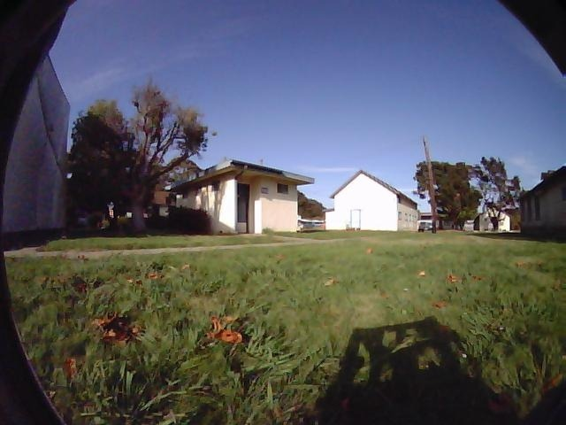
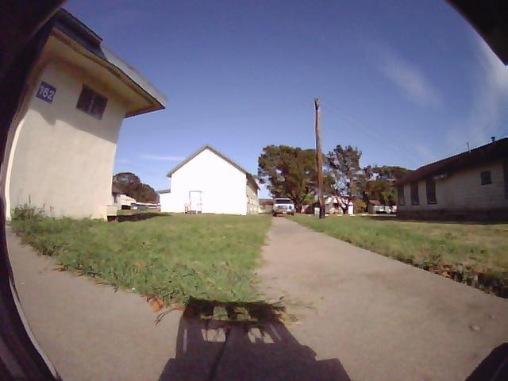
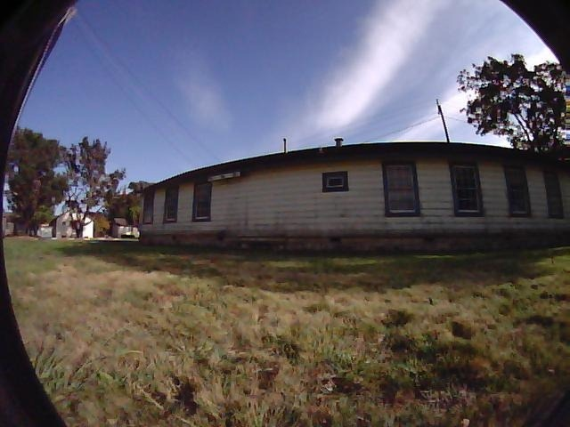
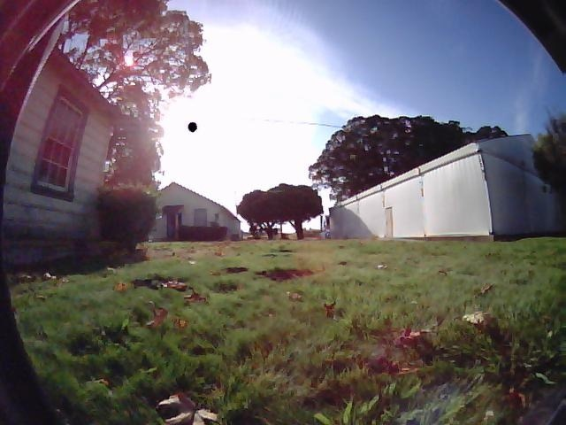
sparse times: [0, 1, 2, 3, 4, 5, 6, 7, ...]
dense range: 0..104
sparse norm: 1.00 +/- 0.00
dense norm: 1.00 +/- 0.00
| t | raw caption | clean text |
|---|---|---|
| 0 | The scene features a grassy area with scattered leaves, a pathway, and a few buildings in the background, with a clear sky overhead. | a grassy area with scattered leaves, a pathway, and a few buildings in the background, with a clear sky overhead |
| 3 | The scene shows a residential area with a paved pathway leading to a white house, surrounded by grassy lawns and a clear blue sky. | a residential area with a paved pathway leading to a white house, surrounded by grassy lawns and a clear blue sky |
| 6 | The scene features a curved, single-story building with a sloped roof, surrounded by a grassy area with scattered trees and power lines overhead. | a curved, single-story building with a sloped roof, surrounded by a grassy area with scattered trees and power lines overhead |
| 10 | The scene depicts a grassy area with a few scattered leaves, surrounded by buildings and trees, under a bright sky. | a grassy area with a few scattered leaves, surrounded by buildings and trees, under a bright sky |
test sample
jackal_2020-01-04-13-06-12_5_r00
sparse 11 frames
dense 104 frames
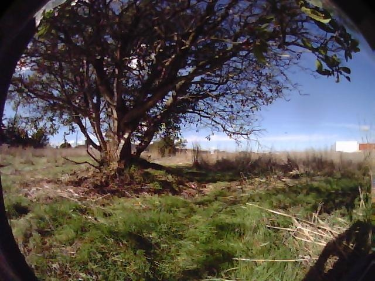
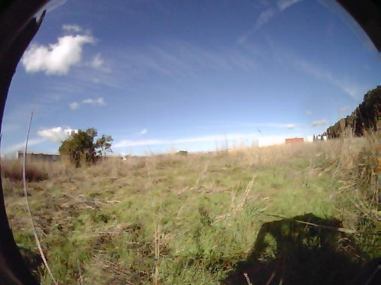
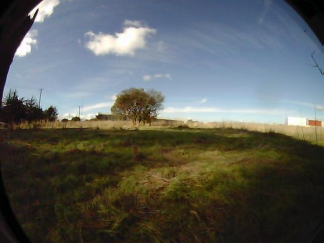
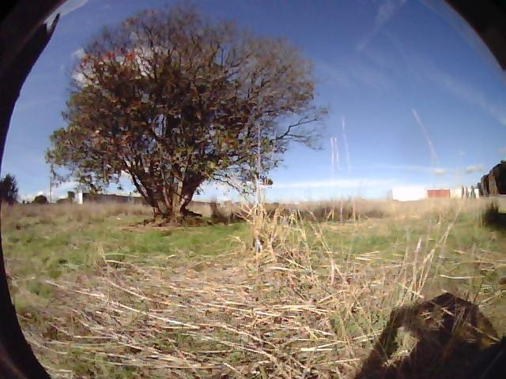
sparse times: [0, 1, 2, 3, 4, 5, 6, 7, ...]
dense range: 0..103
sparse norm: 1.00 +/- 0.00
dense norm: 1.00 +/- 0.00
| t | raw caption | clean text |
|---|---|---|
| 5 | The scene features a grassy area with a large tree, a clear sky, and some distant structures, indicating an open, possibly rural environment with navigable space. | a grassy area with a large tree, a clear sky, and some distant structures, indicating an open, possibly rural environment with navigable space |
| 8 | The scene depicts a grassy field with scattered trees and a clear blue sky, providing a wide, open navigable space. | a grassy field with scattered trees and a clear blue sky, providing a wide, open navigable space |
| 0 | The scene depicts a grassy field with a tree in the distance, a clear sky, and some structures in the background. | a grassy field with a tree in the distance, a clear sky, and some structures in the background |
| 4 | The scene depicts a grassy field with a large tree in the center, surrounded by tall grass and a clear blue sky. | a grassy field with a large tree in the center, surrounded by tall grass and a clear blue sky |
test sample
jackal_2019-08-13-14-41-24_7_r01
sparse 15 frames
dense 144 frames
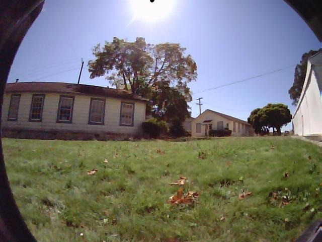
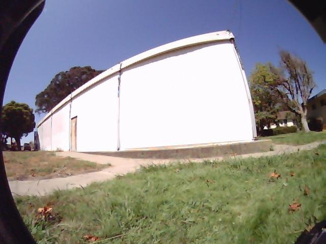
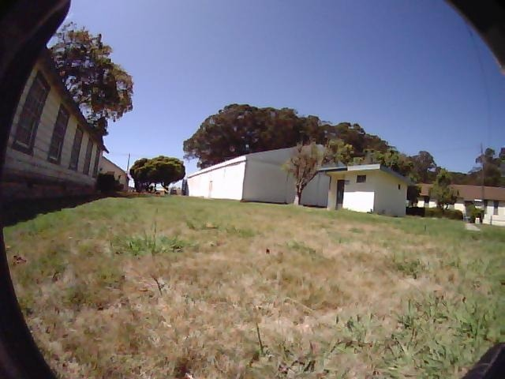
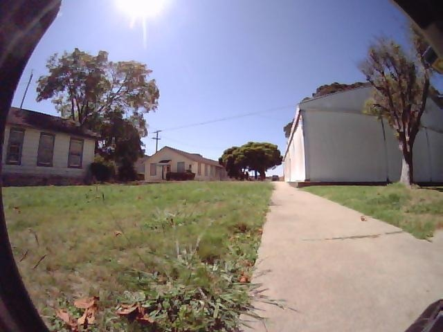
sparse times: [0, 1, 2, 3, 4, 5, 6, 7, ...]
dense range: 0..143
sparse norm: 1.00 +/- 0.00
dense norm: 1.00 +/- 0.00
| t | raw caption | clean text |
|---|---|---|
| 10 | The scene shows a grassy area with scattered leaves, surrounded by houses, trees, and power lines, under a bright sunny sky. | a grassy area with scattered leaves, surrounded by houses, trees, and power lines, under a bright sunny sky |
| 14 | The scene features a large, white, curved building with a wooden door, surrounded by a grassy area with scattered leaves and a paved pathway leading to the entrance. | a large, white, curved building with a wooden door, surrounded by a grassy area with scattered leaves and a paved pathway leading to the entrance |
| 4 | The scene shows a grassy area with a few scattered trees and buildings in the background, creating a semi-urban landscape. | a grassy area with a few scattered trees and buildings in the background, creating a semi-urban landscape |
| 9 | The scene features a grassy area with a concrete pathway leading towards a building, surrounded by trees and a clear sky. | a grassy area with a concrete pathway leading towards a building, surrounded by trees and a clear sky |
test sample
jackal_2019-08-08-13-45-45_4_r01
sparse 15 frames
dense 146 frames
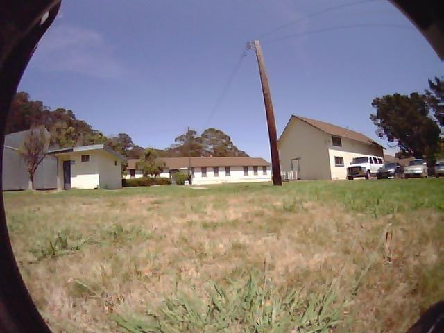
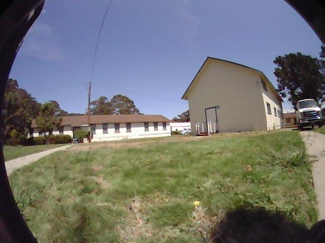
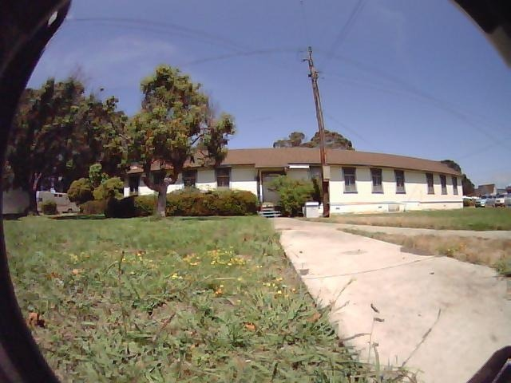
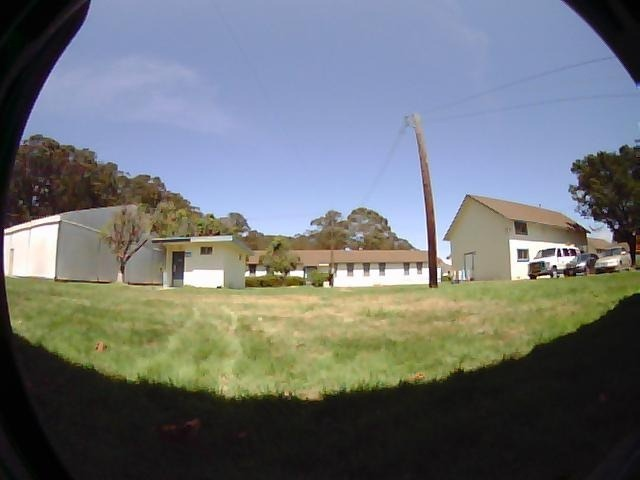
sparse times: [0, 1, 2, 3, 4, 5, 6, 7, ...]
dense range: 0..145
sparse norm: 1.00 +/- 0.00
dense norm: 1.00 +/- 0.00
| t | raw caption | clean text |
|---|---|---|
| 1 | The scene shows a grassy area with a wooden utility pole, a small building, and a larger house in the background, with a clear sky overhead. | a grassy area with a wooden utility pole, a small building, and a larger house in the background, with a clear sky overhead |
| 5 | The scene features a grassy area with a pathway leading to a building, surrounded by trees and a clear sky. | a grassy area with a pathway leading to a building, surrounded by trees and a clear sky |
| 10 | The scene shows a circular building with a flat roof, surrounded by a grassy area with a sidewalk leading to the entrance, and a few trees and bushes in the background. | a circular building with a flat roof, surrounded by a grassy area with a sidewalk leading to the entrance, and a few trees and bushes in the background |
| 0 | The scene shows a grassy area with a few buildings, trees, and a telephone pole, providing navigable space for walking or moving vehicles. | a grassy area with a few buildings, trees, and a telephone pole, providing navigable space for walking or moving vehicles |
train sample
jackal_2019-10-20-16-09-18_0_r04
sparse 1 frames
dense 6 frames
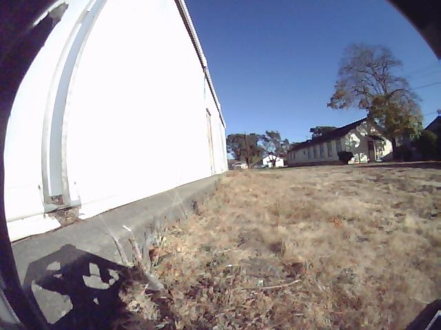
sparse times: [0]
dense range: 0..5
sparse norm: 1.00 +/- 0.00
dense norm: 1.00 +/- 0.00
| t | raw caption | clean text |
|---|---|---|
| 0 | The scene shows a dry, grassy area with a white building on the left and a row of houses in the background, under a clear blue sky. | a dry, grassy area with a white building on the left and a row of houses in the background, under a clear blue sky |
train sample
jackal_2019-10-31-16-10-57_9_r00
sparse 4 frames
dense 32 frames
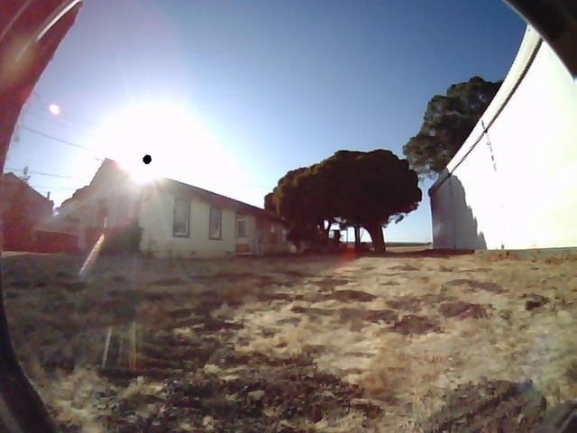
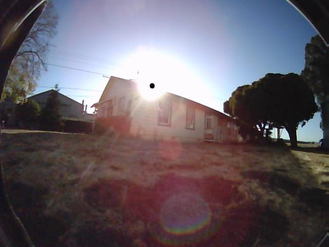
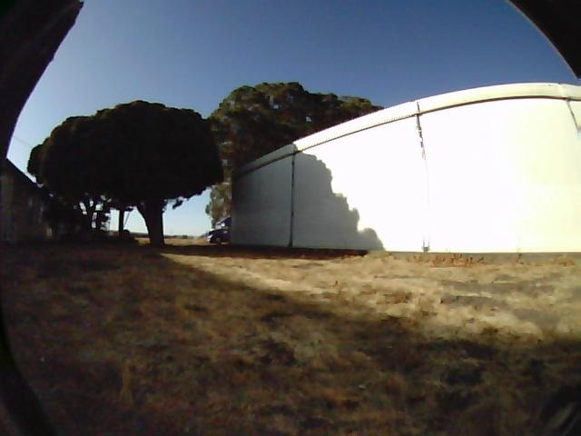
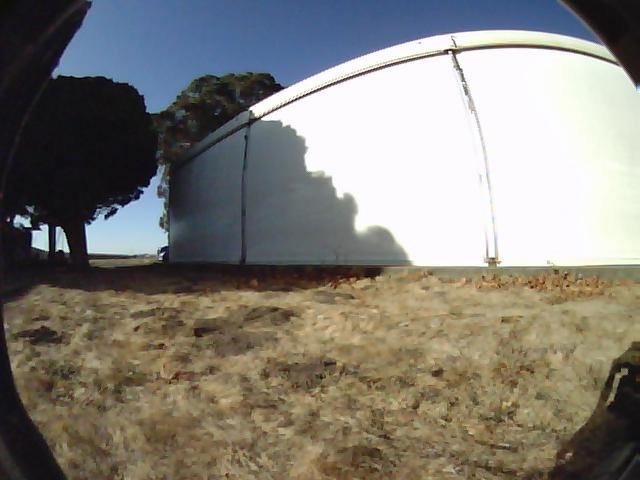
sparse times: [0, 1, 2, 3]
dense range: 0..31
sparse norm: 1.00 +/- 0.00
dense norm: 1.00 +/- 0.00
| t | raw caption | clean text |
|---|---|---|
| 0 | The scene shows a sandy area with a house, a tree, and a white structure, with the sun shining brightly in the sky. | a sandy area with a house, a tree, and a white structure, with the sun shining brightly in the sky |
| 1 | The scene shows a house with a bright sun shining behind it, casting a lens flare effect, and a grassy area with trees and power lines in the background. | a house with a bright sun shining behind it, casting a lens flare effect, and a grassy area with trees and power lines in the background |
| 2 | The scene features a grassy area with a white curved structure, trees, and a clear sky, providing a navigable space with some obstacles like the trees and the structure. | a grassy area with a white curved structure, trees, and a clear sky, providing a navigable space with some obstacles like the trees and the structure |
| 3 | The scene shows a large, white, dome-shaped structure with a shadow cast on its side, situated on a dry, grassy terrain with a clear blue sky above. | a large, white, dome-shaped structure with a shadow cast on its side, situated on a dry, grassy terrain with a clear blue sky above |
train sample
jackal_2019-08-15-16-05-21_22_r03
sparse 13 frames
dense 125 frames
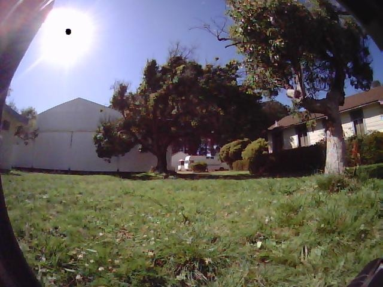
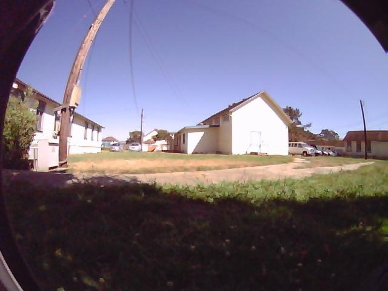
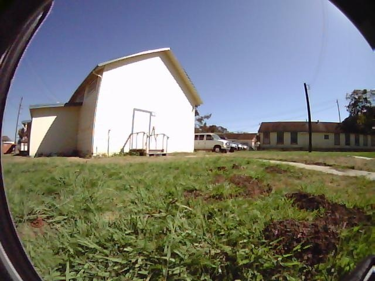
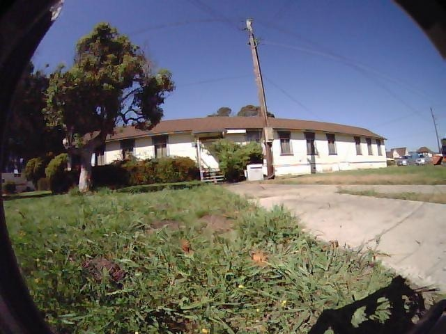
sparse times: [0, 1, 2, 3, 4, 5, 6, 7, ...]
dense range: 0..124
sparse norm: 1.00 +/- 0.00
dense norm: 1.00 +/- 0.00
| t | raw caption | clean text |
|---|---|---|
| 12 | The scene depicts a grassy area with trees, bushes, and a white building in the background, under a bright sunny sky. | a grassy area with trees, bushes, and a white building in the background, under a bright sunny sky |
| 3 | The scene shows a residential area with a grassy yard, a white house, and a utility pole, with a clear path leading to the house. | a residential area with a grassy yard, a white house, and a utility pole, with a clear path leading to the house |
| 7 | The scene features a grassy area with a white building, a parked white truck, and a pathway leading to a house with a brown roof, all under a clear blue sky. | a grassy area with a white building, a parked white truck, and a pathway leading to a house with a brown roof, all under a clear blue sky |
| 11 | The scene features a grassy area with a tree, a house, and a paved driveway, with a telephone pole and power lines in the background. | a grassy area with a tree, a house, and a paved driveway, with a telephone pole and power lines in the background |
train sample
jackal_2020-01-04-13-15-18_7_r01
sparse 12 frames
dense 117 frames
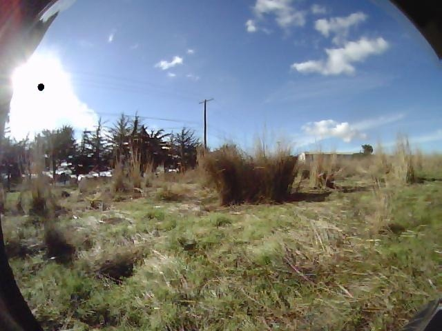
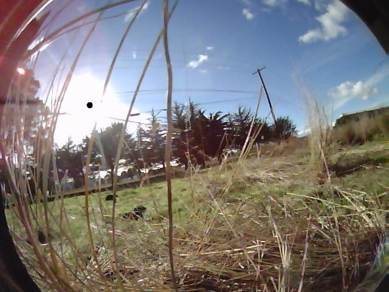
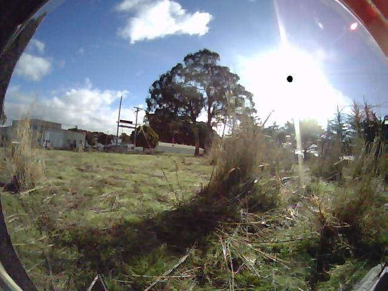
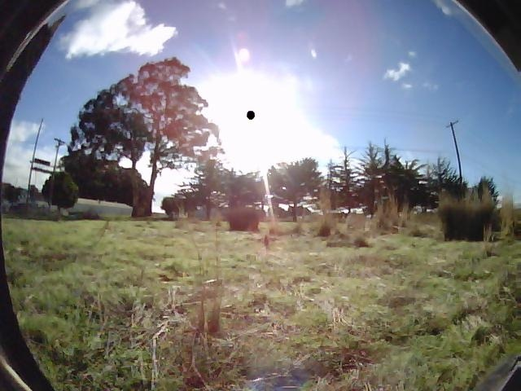
sparse times: [0, 1, 2, 3, 4, 5, 6, 7, ...]
dense range: 0..116
sparse norm: 1.00 +/- 0.00
dense norm: 1.00 +/- 0.00
| t | raw caption | clean text |
|---|---|---|
| 6 | The scene depicts an open field with scattered vegetation, a telephone pole, and a clear sky with some clouds. | an open field with scattered vegetation, a telephone pole, and a clear sky with some clouds |
| 9 | The scene depicts a grassy area with tall grass, a fence, and a telephone pole, under a bright sky with scattered clouds. | a grassy area with tall grass, a fence, and a telephone pole, under a bright sky with scattered clouds |
| 1 | The scene shows an open grassy area with scattered trees, a bright sun, and a clear sky, indicating a sunny day with minimal obstacles in the navigable space. | an open grassy area with scattered trees, a bright sun, and a clear sky, indicating a sunny day with minimal obstacles in the navigable space |
| 5 | The scene depicts a grassy field with scattered trees and power lines, under a bright, sunny sky. | a grassy field with scattered trees and power lines, under a bright, sunny sky |